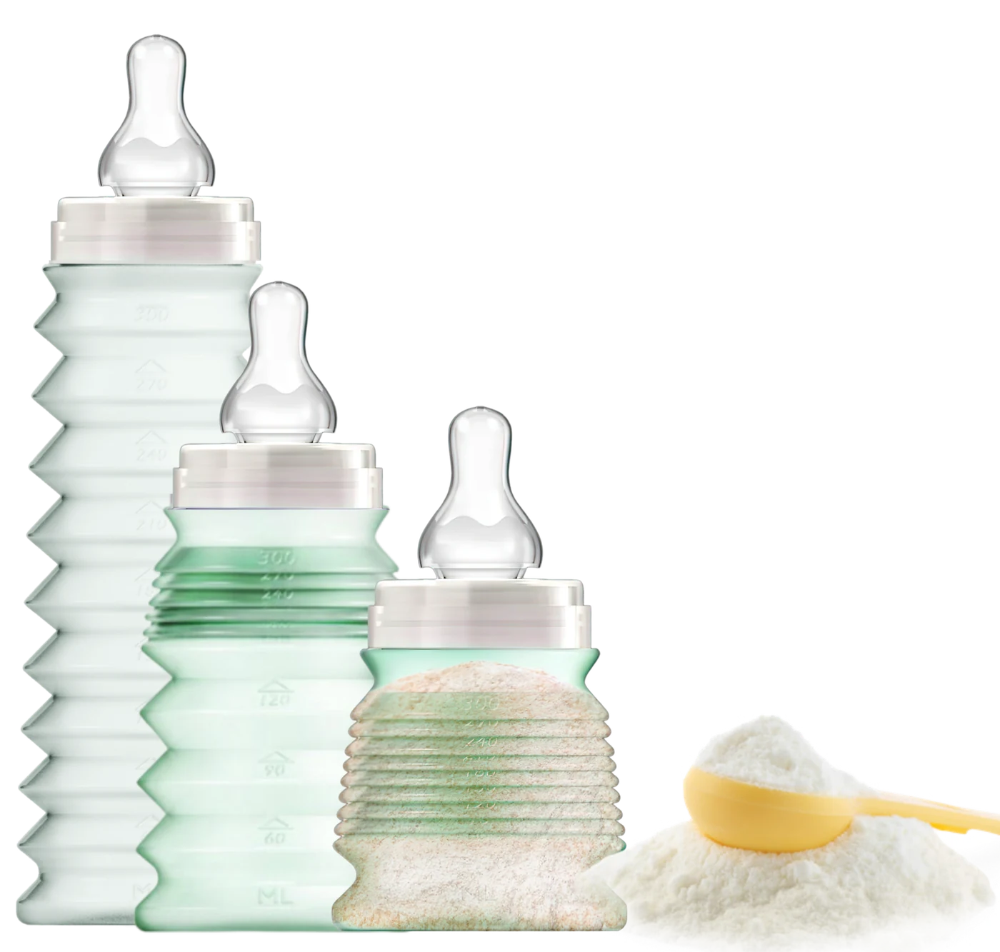
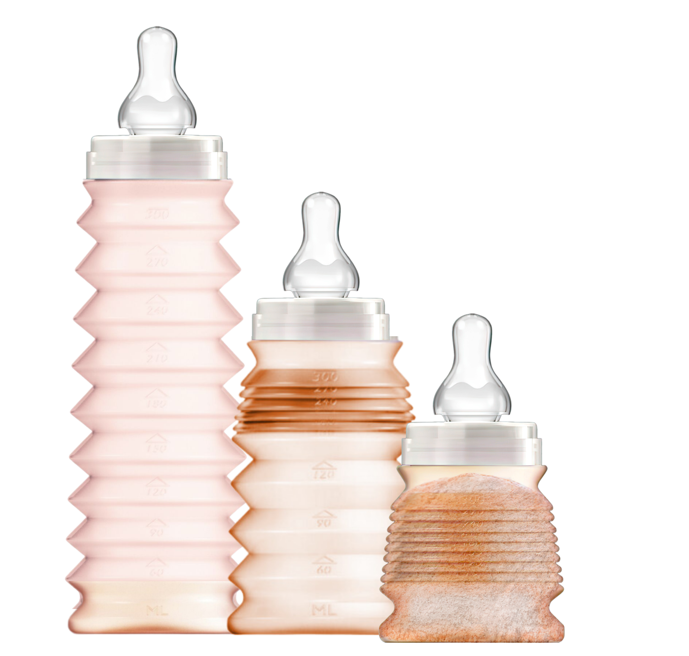

Le biberon nomade pliable
Profitez du moment.
Préparez ici. Nourrissez partout.
Avant de sortir, vous placez la dose de lait en poudre dans le biberon replié. Au moment du repas, vous dépliez, vous ajoutez l’eau. C’est prêt.
330 ml
Sans BPA
50 % végétal
Testé par le LNE
Tétine 6 mois fournie



Comment ça marche ?
Trois gestes, et rien de plus.
BIBEON est vendu vide. Le lait en poudre et l’eau ne sont pas fournis.

1
Dosez
Avant de sortir, versez la quantité de lait en poudre nécessaire dans le biberon replié, puis refermez.

2
Dépliez
Au moment du repas, dépliez le corps à soufflets : le biberon retrouve toute sa contenance de 330 ml.

3
Ajoutez l’eau
Ajoutez l’eau, secouez, et le biberon est prêt. Plus de boîte doseuse à transporter à côté.
En vrai, dans la vraie vie
Replié, il tient
dans un sac à main.
Pas de sac à langer à sortir pour une course d’une heure. Trois biberons préparés se glissent là où un seul biberon rigide ne rentrait pas.
C’est le geste que tout le reste du site raconte : vous préparez chez vous, vous partez léger.
Démonstration filmée avec des biberons déjà dosés.
Nos garanties
Ce que nous pouvons prouver.
Pas d’adjectif : des éléments vérifiables, tenus à disposition.
LNE
Testé et contrôlé
Le biberon a été testé par le Laboratoire national de métrologie et d’essais. Dossier de conformité disponible sur demande.
0
Migration détectée
Aucune substance de migration chimique du plastique n’a été détectée dans le lait lors des essais.
330 ml
Contenance utile
Le corps à soufflets se déplie jusqu’à 330 ml, puis se replie à la taille d’un petit pot une fois vide.
6 mois
Tétine fournie
Chaque biberon est livré avec sa tétine en silicone, débit « 6 mois ». Nettoyage simple, usage durable.

Notre engagement
Plus de liberté,
plus de moments ensemble.
BIBEON est né d’une idée simple : alléger les sorties avec bébé. Le repas ne devrait pas décider de l’heure du retour, ni du volume du sac.
Un biberon qui se prépare à l’avance et se replie, c’est une contrainte de moins entre vous et le moment que vous étiez venus vivre.
Découvrir son fonctionnementLes coloris
Une palette douce,
un biberon par enfant.

Notre boutique
Les essentiels BIBEON.
La boutique ouvre bientôt. Laissez-nous votre adresse : vous serez prévenu(e) en premier.

Biberon nomade 330 ml
Le biberon pliable avec sa tétine silicone débit 6 mois. Vendu vide.
Prix à venirMe prévenir

Le lot de trois
Trois biberons à préparer d’avance : la journée entière tient dans le sac.
Prix à venirMe prévenir
Pack découverte
Le biberon et son sachet « Toujours prêt » : l’idée de naissance qui sert vraiment.
Prix à venirMe prévenir
L’esprit BIBEON
« Moins de préparation dans le sac, plus de place pour les moments qui comptent. »

Être prévenu(e) du lancement
Une seule adresse, un seul message : le jour où BIBEON est disponible.